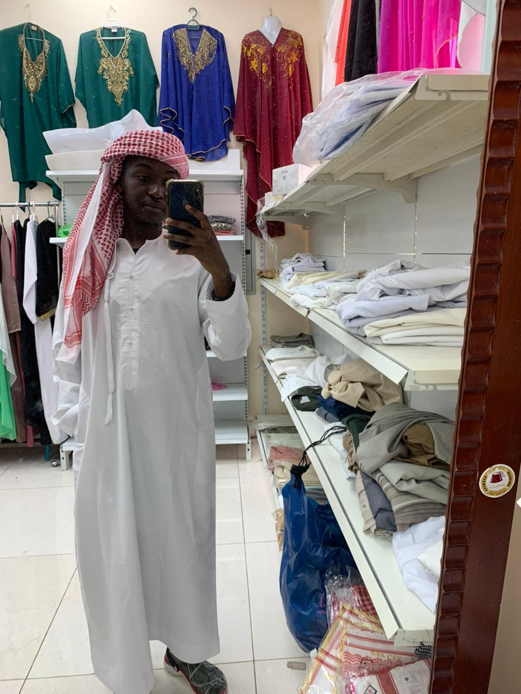

At Dynamis, we believe every watch is more than an instrument.... it is a companion to life's most defining moments. Our vision is to become East Africa's most trusted home for fine timepieces, where every customer discovers a watch that truly reflects who they are.
Founded in Nairobi, we curate watches with precision, passion, and an uncompromising eye for quality. From entry-level precision pieces to rare collector's editions, we bridge the world's finest horology with the discerning Kenyan customer.
We don't just sell watches — we preserve legacies, celebrate milestones, and connect people to something beautifully enduring.
Every watch we sell is 100% genuine, sourced directly from authorised distributors and verified by our in-house expert team. We never compromise on authenticity — ever. Your trust is our most important asset.
A watch purchase is personal. We take the time to understand your lifestyle, taste, and budget before making a recommendation. Our service does not end at the sale — we are here for every service, question, and milestone after.
We believe mechanical craftsmanship is an art form worthy of preservation. We champion brands and movements that honour centuries of horological tradition, while welcoming the precision of modern innovation.
Keith Mulwa
Founder & Director
Nicholas Ogara
Head of Curation
Albert Atandi
Master Watchsmith

Andre Wamaiko
Client Experience